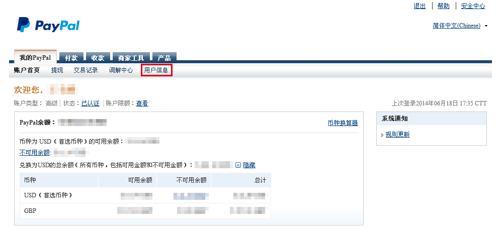
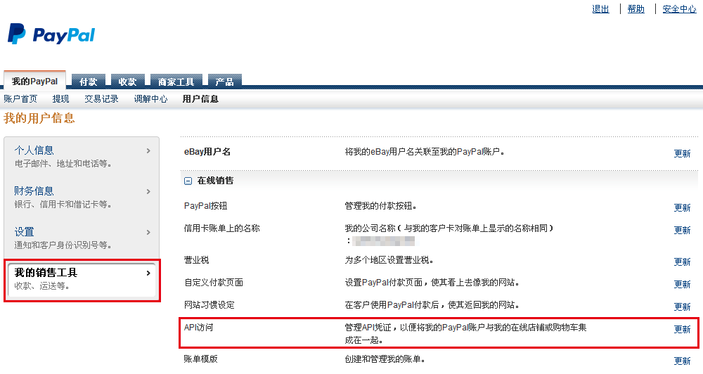
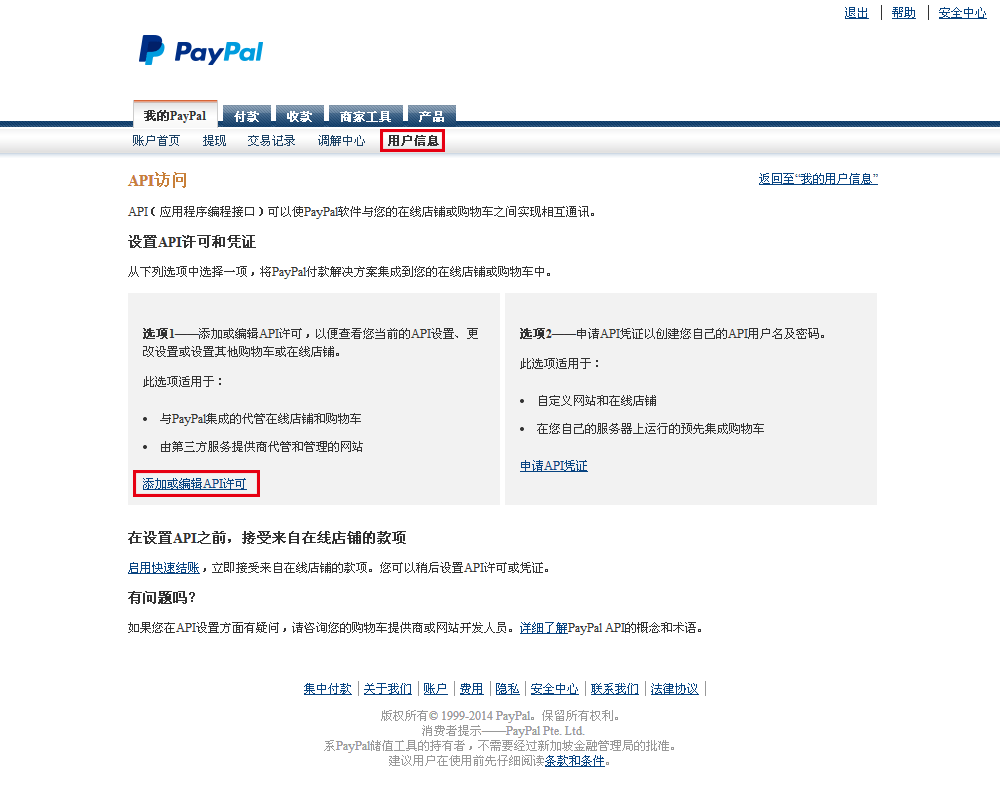
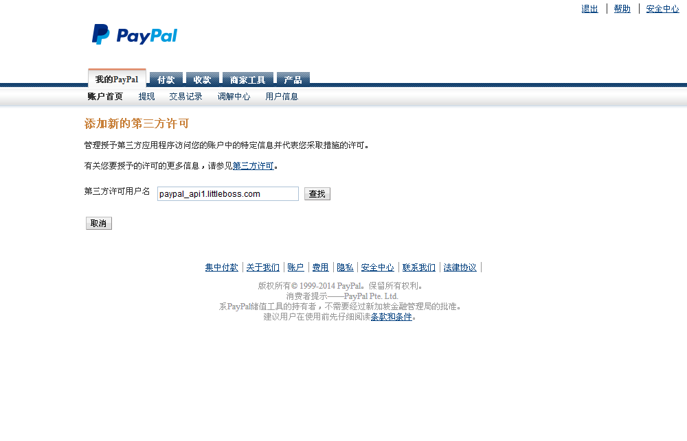
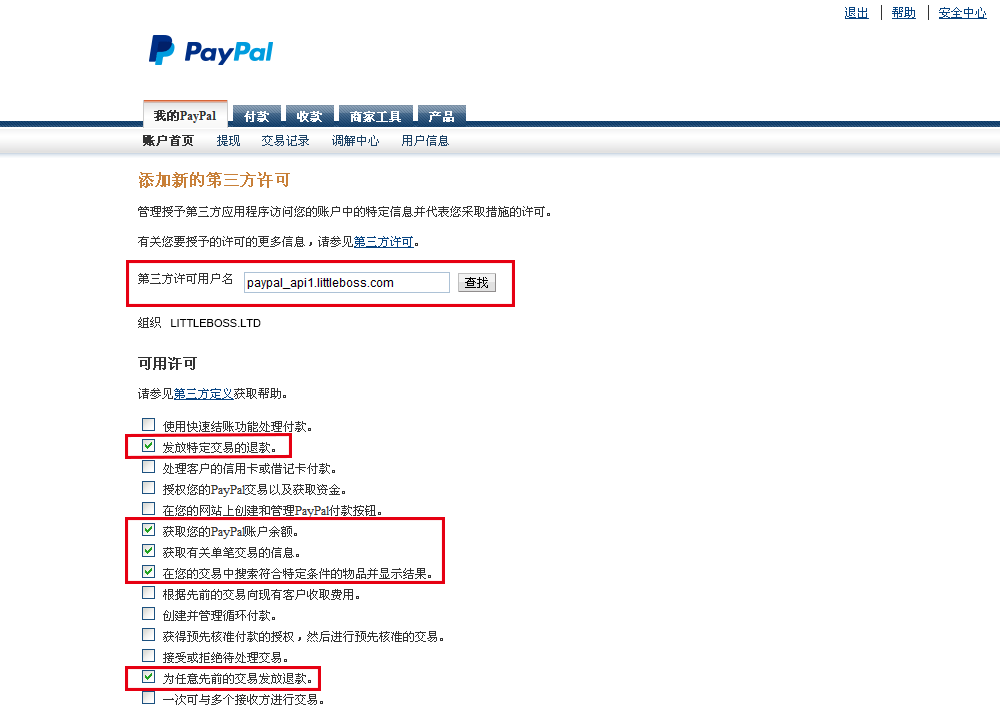

将您的Paypal帐号的数据查询权限授权给小老板的PayPal API用户，小老板才可以获取您eBay订单的付款记录以及买家的PayPal收货地址。小老板承诺在未经您的允许下绝不会获取或串改您的数据，我们将为本网站操作负有全部责任。
登录PayPal，点击我的PayPal页中“用户信息”菜单，请直接点击“用户信息”这个菜单，而不是点击下拉下来的菜单项中的任何一项。

进入用户信息页面之后，点击左侧菜单中的“我的销售工具”菜单。

在我的销售工具页面中点击“API访问”后面的“更新”链接。

页面跳转到API访问页面之后，点击左侧的“授予API许可”链接。

页面跳转到添加新的第三方许可页面，在页面中输入第三方许可用户名“paypal_api1.littleboss.com”，然后点击“查找”按钮。查找到小老板的第三方许可用户之后，勾选页面中以下四项授权点击“新增”按钮即可。
·发放特定交易的退款；
·获取您的PayPal账户余额；
·获取有关单笔交易的信息；
·在您的交易中搜索符合特定条件的物品并显示结果。
